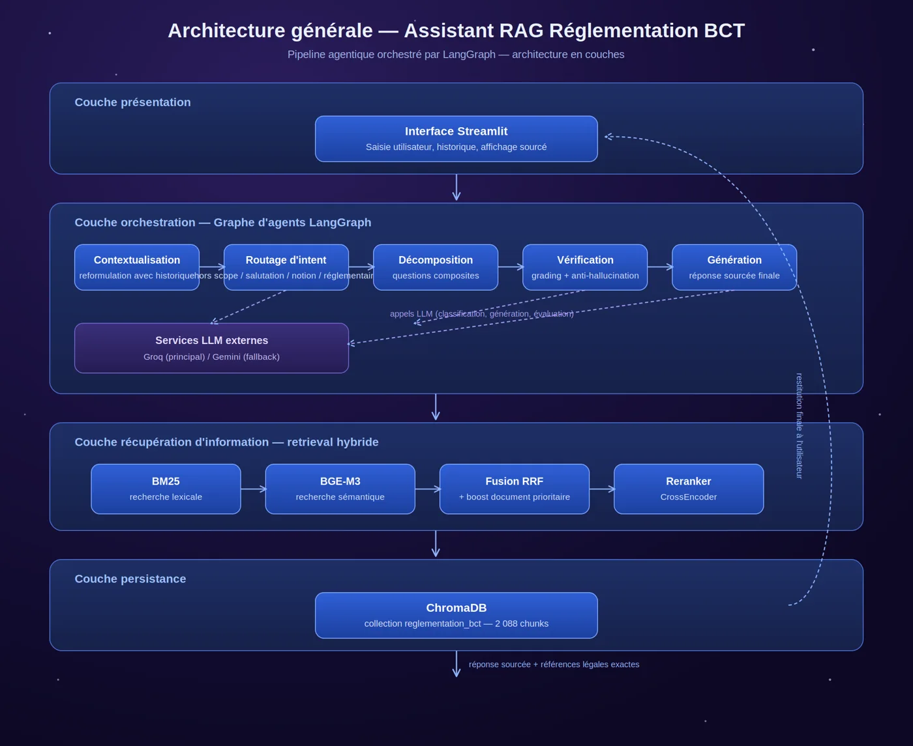

Stage · Banque Centrale de Tunisie · juin – juillet 2026
Assistant réglementaire RAG multi-agents
Un assistant qui répond aux questions sur la réglementation des changes à partir d'une soixantaine de lois, décrets, circulaires et avis (1975 – 2024), en citant les articles exacts. Les questions composées sont découpées en sous-questions, chaque réponse passe un contrôle anti-hallucination avant d'être affichée.
- Recherche hybride BM25 + BGE-M3, fusion RRF, reranking par cross-encoder
- Découpage hiérarchique Partie › Titre › Chapitre › Article : 2 088 fragments avec métadonnées
- Agent de références croisées qui va chercher les textes cités par un article
- Environ 90 % de réponses exactes sur un banc de 80 questions
LangGraph · LangChain · ChromaDB · BGE-M3 · Docling · Streamlit